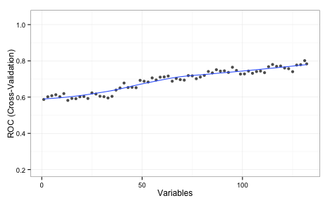

Simulated Annealing Feature Selection
As previously mentioned, caret has two new feature selection routines based on genetic algorithms (GA) and simulated annealing (SA). The help pages for the two new functions give a detailed account of the options, syntax etc.
The package already has functions to conduct feature selection using simple filters as well as recursive feature elimination (RFE). RFE can be very effective. It initially ranks the features, then removes them in sequence, starting with the least importance variables. It is a greedy method since it never backtracks to reevaluate a subset. Basically, it points itself in a single direction and proceeds. The main question is how far to go in that direction.
These two new functions, gafs and safs, conduct a global search over the feature set. This means that the direction of the search is constantly changing and may re-evaluate solutions that are similar to (or the same as) previously evaluated feature sets. This is good and bad. If a feature set is not easily “rankable” then it should do better than RFE. However, it will require a larger number of model fits and has a greater chance of overfitting the features to the training set.
I won’t go over the details of GAs or SA. There are a lot of references on these and you can always check out Chapter 19 of our book. Also, since there were two previous blog posts about genetic algorithms, I’ll focus on simulated annealing in this one.
To demonstrate I’ll use the Alzheimer’s disease data from Section 19.6 (page 502). It contains biomarker and patient demographic data that are being used to predict who will eventually have cognitive impairment. The original data contained instances for 333 subjects and information on 133 predictors.
In the book, we fit a number of different models to these data and conducted feature selection. Using RFE, linear discriminant analysis, generalized linear models and naive Bayes seemed to benefit from removing non-informative predictors. However, K-nearest neighbors and support vector machines had worse performance as RFE proceeded to remove predictors.
With KNN, there is no model-based method for measuring predictor importance. In these cases, the rfe will use the area under the ROC curve for each individual predictor for ranking. Using that approach, here is the plot of KNN performance over subset sizes:

The values shown on the plot are the average area under the ROC curve measured using 5 repeats of 10-fold cross-validation. This implies that the full set of predictors is required. I should also note that, even with the entire predictor set, the KNN model did worse than LDA and random forests.
While RFE couldn’t find a better subset of predictors, that does not mean that one doesn’t exist. Can simulated annealing do better?
The code to load and split the data are in the AppliedPredictiveModeling package and you can find the markdown for this blog post linked at the bottom of this post. We have a data frame called training that has all the data used to fit the models. The outcome is a factor called Class and the predictor names are in a character vector called predVars. First, let’s define the resampling folds.
Let’s define the control object that will specify many of the important options for the search. There are a lot of details to spell out, such as how to train the model, how new samples are predicted etc. There is a pre-made list called caretSA that contains a starting template.
names(caretSA)
## [1] "fit" "pred" "fitness_intern" "fitness_extern"
## [5] "initial" "perturb" "prob" "selectIter" These functions are detailed on the packages web page. We will make a copy of this and change the method of measuring performance using hold-out samples:
knnSA <- caretSA
knnSA$fitness_extern <- twoClassSummaryThis will compute the area under the ROC curve and the sensitivity and specificity using the default 50% probability cutoff. These functions will be passed into the safs function (see below)
safs will conduct the SA search inside a resampling wrapper as defined by the index object that we created above (50 total times). For each subset, it computed and out-of-sample (i.e. “external”) performance estimate to make sure that we are not overfitting to the feature set. This code should reproduce the same folds as those used in the book:
library(caret)
set.seed(104)
index <- createMultiFolds(training$Class, times = 5)Here is the control object that we will use:
ctrl <- safsControl(functions = knnSA,
method = "repeatedcv",
repeats = 5,
## Here are the exact folds to used:
index = index,
## What should we optimize?
metric = c(internal = "ROC",
external = "ROC"),
maximize = c(internal = TRUE,
external = TRUE),
improve = 25,
allowParallel = TRUE)The option improve specifies how many SA iterations can occur without improvement. Here, the search restarts at the last known improvement after 25 iterations where the internal fitness value has not improved. The allowParallel options tells the package that it can parallelize the external resampling loops (if parallel processing is available).
The metric argument above is a little different than it would for train or rfe. SA needs an internal estimate of performance to help guide the search. To that end, we will also use cross-validation to tune the KNN model and measure performance. Normally, we would use the train function to do this. For example, using the full set of predictors, this could might work to tune the model:
train(x = training[, predVars],
y = training$Class,
method = "knn",
metric = "ROC",
tuneLength = 20,
preProc = c("center", "scale"),
trControl = trainControl(method = "repeatedcv",
## Produce class prob predictions
classProbs = TRUE,
summaryFunction = twoClassSummary))The beauty of using the caretSA functions is that the ... are available.
A short explanation of why you should care…
R has this great feature where you can seamlessly pass arguments between functions. Suppose we have this function that computes the means of the columns in a matrix or data frame:
mean_by_column <- function(x, ...) {
results <- rep(NA, ncol(x))
for(i in 1:ncol(x)) results[i] <- mean(x[, i], ...)
results
}(aside: don’t loop over columns with for. See ?apply, or ?colMeans, instead)
There might be some options to the mean function that we want to pass in but those options might change for different applications. Rather than making different versions of the function for different option combinations, any argument that we pass to mean_by_column that is not one it its arguments (x, in this case) is passed to wherever the three dots appear inside the function. For the function above, they go to mean. Suppose there are missing values in x:
example <- matrix(runif(100), ncol = 5)
example[1, 5] <- NA
example[16, 1] <- NA
mean_by_column(example)
## [1] NA 0.4922 0.4704 0.5381 NAmean has an option called na.rm that will compute the mean on the complete data. Now, we can pass this into mean_by_column even though this is not one of its options.
mean_by_column(example, na.rm = TRUE)
## [1] 0.5584 0.4922 0.4704 0.5381 0.4658Here’s why this is relevant. caretSA$fit uses train to fit and possibly tune the model.
caretSA$fit
## function (x, y, lev = NULL, last = FALSE, ...)
## train(x, y, ...)Any options that we pass to safs that are not x, y, iters, differences, or safsControl will be passed to train.
(Even further, any option passed to safs that isn’t an option to train gets passed down one more time to the underlying fit function. A good example of this is using importance = TRUE with random forest models. )
So, putting it all together:
set.seed(721)
knn_sa <- safs(x = training[, predVars],
y = training$Class,
iters = 500,
safsControl = ctrl,
## Now we pass options to `train` via "knnSA":
method = "knn",
metric = "ROC",
tuneLength = 20,
preProc = c("center", "scale"),
trControl = trainControl(method = "repeatedcv",
repeats = 2,
classProbs = TRUE,
summaryFunction = twoClassSummary,
allowParallel = FALSE))To recap:
- the SA is conducted many times inside of resampling to get an external estimate of performance.
- inside of this external resampling loop, the KNN model is tuned using another, internal resampling procedure.
- the area under the ROC curve is used to guide the search (internally) and to know if the SA has overfit to the features (externally)
- in the code above, when
safsis called with other options (e.g.method = "knn"),safspasses themethod,metric,tuneLength,preProc, andtuneLength,trControloptions tocaretSA$fitcaretSA$fitpasses these options totrain
After external resampling, the optimal number of search iterations is determined and one last SA is run using all of the training data.
Needless to say, this executes a lot of KNN models. When I ran this, I used parallel processing to speed things up using the doMC package.
Here are the results of the search:
knn_sa
## Simulated Annealing Feature Selection
##
## 267 samples
## 132 predictors
## 2 classes: 'Impaired', 'Control'
##
## Maximum search iterations: 500
## Restart after 25 iterations without improvement (15.6 restarts on average)
##
## Internal performance values: ROC, Sens, Spec
## Subset selection driven to maximize internal ROC
##
## External performance values: ROC, Sens, Spec
## Best iteration chose by maximizing external ROC
## External resampling method: Cross-Validated (10 fold, repeated 5 times)
##
## During resampling:
## * the top 5 selected variables (out of a possible 132):
## Ab_42 (96%), tau (92%), Cystatin_C (82%), NT_proBNP (82%), VEGF (82%)
## * on average, 60 variables were selected (min = 45, max = 75)
##
## In the final search using the entire training set:
## * 59 features selected at iteration 488 including:
## Alpha_1_Antitrypsin, Alpha_1_Microglobulin, Alpha_2_Macroglobulin, Angiopoietin_2_ANG_2, Apolipoprotein_E ...
## * external performance at this iteration is
##
## ROC Sens Spec
## 0.852 0.198 0.987 The algorithm automatically chose the subset created at iteration 488 of the SA (based on the external ROC) which contained 59 out of 133 predictors.
We can also plot the performance values over iterations using the plot function. By default, this uses the ggplot2 package, so we can add a theme at the end of the call:
Each of the data points for the external fitness is a average of the 50 resampled ROC values. The most improvement was found in the first 200 iterations. The internal estimate is generally more optimistic than the external estimate. It also tends to increase while the external estimate is relatively flat, indicating some overfitting. The plot above indicates that less iterations might probably give us equivalent performance. Instead of repeating the SA with fewer iterations, the update function can be used to pick a different subset size.
Let’s compare the RFE and SA profiles. For RFE and SA, the ROC values are averaged over the 50 resamples. In the case of SA, the number of predictors is also an average. For example, at iteration 100 of the SA, here is the subset size distribution across the 50 resamples:
Here are superimposed smoothed trend lines for the resampling profiles of each search method:
Recall that the same cross-validation folds were used for SA and RFE, so this is an apples-to-apples comparison. SA searched a smaller range of subset sizes over the iterations in comparison to RFE. The code here starts the initial subset with a random 20% of the possible features and tended to increase as the search continued and then stabilized at a size of about 55.
How does this predictor subset perform on the test data?
library(pROC)
roc(testing$Class,
predict(knn_sa, testing)$Impaired,
levels = rev(levels(testing$Class)))
## Call:
## roc.default(response = testing$Class,
## predictor = predict(knn_sa, testing)$Impaired,
## levels = rev(levels(testing$Class)))
##
## Data: predict(knn_sa, testing)$Impaired in 48 controls
## (testing$Class Control) < 18 cases (testing$Class
## Impaired).
##
## Area under the curve: 0.848This is better than the test set results for the RFE procedure. Note that the test set AUC is much more in-line with the external estimate of the area under the ROC curve. The bad new is that we evaluated many more models than the RFE procedure and the SA process was slightly more than 11-fold slower than RFE to complete. Good things take time. Here is a parallel-coordinate plot of the individual resampling results, match by fold:
The difference is statistically signficant too:
summary(diff(rs, metric = "ROC"))
## Call:
## summary.diff.resamples(object = diff(rs, metric = "ROC"))
##
## p-value adjustment: bonferroni
## Upper diagonal: estimates of the difference
## Lower diagonal: p-value for H0: difference = 0
##
## ROC
## RFE SA
## RFE -0.0504
## SA 8.02e-06 The genetic algorithm code in gafs has very similar syntax to safs and also has pre-made functions.
The knitr file for these analyses can be found here (in Rhtml).
(This article was originally posted at http://appliedpredictivemodeling.com)